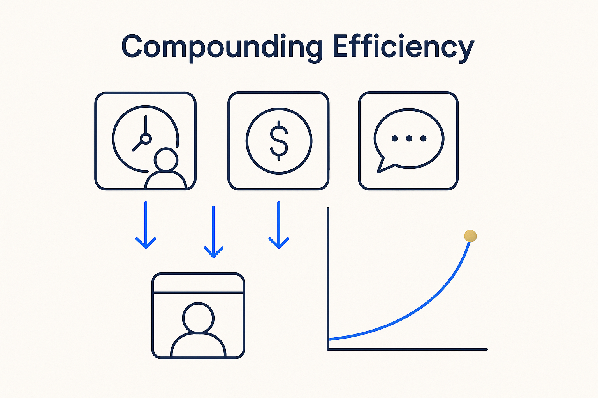

Spend time, money and attention where they compound — cut the meetings, the licensed bloat and the unstructured chat that add nothing, and put the resource into structure that pays back.

> Spend time, money and attention where they compound — cut the meetings, the licensed bloat and the unstructured chat that add nothing, and put the resource into structure that pays back.
Efficiency here is not about working faster for its own sake; it is about refusing to spend where nothing compounds. Too many meetings with no clear result, expensive licenses for a fraction of a tool you actually use, tokens burned on chat with no structured vault behind it — each is a leak. The efficient move is to name the leak and close it: cut the meeting time, drop the bloat, and put the freed resource into the structure that keeps paying back.
The multiplier is structure. Model the knowledge once, in the open, and everything downstream — SQL, lineage, docs, answers, the next meeting’s prep — is generated from it instead of rebuilt by hand. That is the difference between effort that evaporates and effort that accumulates: the first is a cost, the second is an asset.
Ask the honest question in every meeting and every purchase: what value are we adding, and are we doing it the right way? Efficiency is what you get when the answer is allowed to change what you do.
Where it lives: the attitude layer of Breakthrough Modeling — resource put where it compounds.